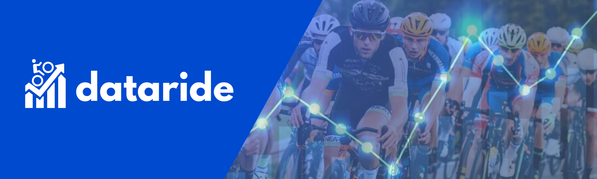

Report

Description
Dataride is a data analysis dashboard about bicycle sales that focuses on analyzing data and presenting it in the form of visualizations that are easy to understand.
in this case we analyze bicycle sales in Europe.
The project dashboard for bicycle sales in Europe is a comprehensive tool designed to provide detailed insight into the bicycle market in different European countries. The dashboard integrates multiple data sources to offer real-time analysis and historical trends, facilitating data-driven decision making for stakeholders including manufacturers, retailers, policy makers, investors and consumers.
The project dashboard for bicycle sales in Europe is a comprehensive tool designed to provide detailed insight into the bicycle market in different European countries. The dashboard integrates multiple data sources to offer real-time analysis and historical trends, facilitating data-driven decision making for stakeholders including manufacturers, retailers, policy makers, investors and consumers.
Insight and Recommendation
-
Insight :
-
Insight :
1. In 2011-2012, the Product_Category contained Bikes only with a total of 64 products. In 2013-2016, the Product_Category included Bikes, Accessories, and Clothing with a total of 130 products.
2. The Product_Category with the highest number of purchases is Accessories, and the highest Revenue is Bikes.
3. The product with the highest number of purchases is the Water Bottle - 30 oz. After all the data is correctly filled in, click save.
4. The Product Category 'Bikes' consists of 3 types of bikes: Touring, Mountain, and Road.
Recommendation :
1. Product variations are focused on the Product_Category 'Bikes' by adding types of bikes and the Product_Category 'Accessories' to increase sales. -
Insight :
1. Almost every year, the highest revenue comes from the Female gender. However, in certain years such as 2014 and 2016, there was a decrease in Female gender revenue. In 2013 - 2016, Female gender had low of total orders.
2. In 2011 - 2013, the Product_Category with the highest revenue was Bikes. However, in 2014 and 2016 the Product_Category 'Accessories' became the highest revenue category. As a result of:
a. In 2011 until June 2013 the Product_Category contained Bikes only.
b. In July 2014 and December 2016 Product_Category contaiend only two categories there are (Clothing dan Accessories).
c. In 2014 August until December there was no sales at all.
d. January-June 2015 the Product_Category contained bikes only.
So, there is a pattern, 30 months (Bikes) - 13 months (3 Pc) - 1 months (2 pc) - 5 months (hiatus) - 6 months (Bikes) - 7 months (3 pc) - 1 months (2 pc).
3. The Product_Category Accessories that has the highest revenue is the Sport-100 Helmet. However, for the highest number of product purchases are Water Bottle and Patch Kit.
4. The highest revenue is obtained by the Female gender in the Product_Category Bikes among the Adults age group (35-64).
5. The highest order is obtained by the Male Gender in the Product_Category Accessories among the Adults age group(35-64).
Recommendation :
1. To achieve high revenue, promotions/product innovations are targeted specifically towards Females among Adult age group (35-64).
2. However, to increase total_orders, can be focused towards the Product_Category Accessories, targeting the Male gender among the Adult age group (35-64). -
Insight :
1. The revenue based on Age_Group for the Product_Category with the highest number is Bikes, the products are Mountain-200 Black and Mountain-200 Silver and the highest Age_Group is Adult (35-64).
2. The highest number of purchases is the Product_Category Accessories (Water Bottle-30) with the dominant Age_Group is Adult.
3. The precentage of Order_Quantity for Age_Group 'Adult' is 50%.
Recommendation :
1. Improving product innovation in the Product_Category Accessories and Bikes, focusing on the Adult Age_Group.
2. Increasing promotions for the Product_Category Accessories (Water Bottle - 30oz) and Bikes (Mountain - 200 black/silver).